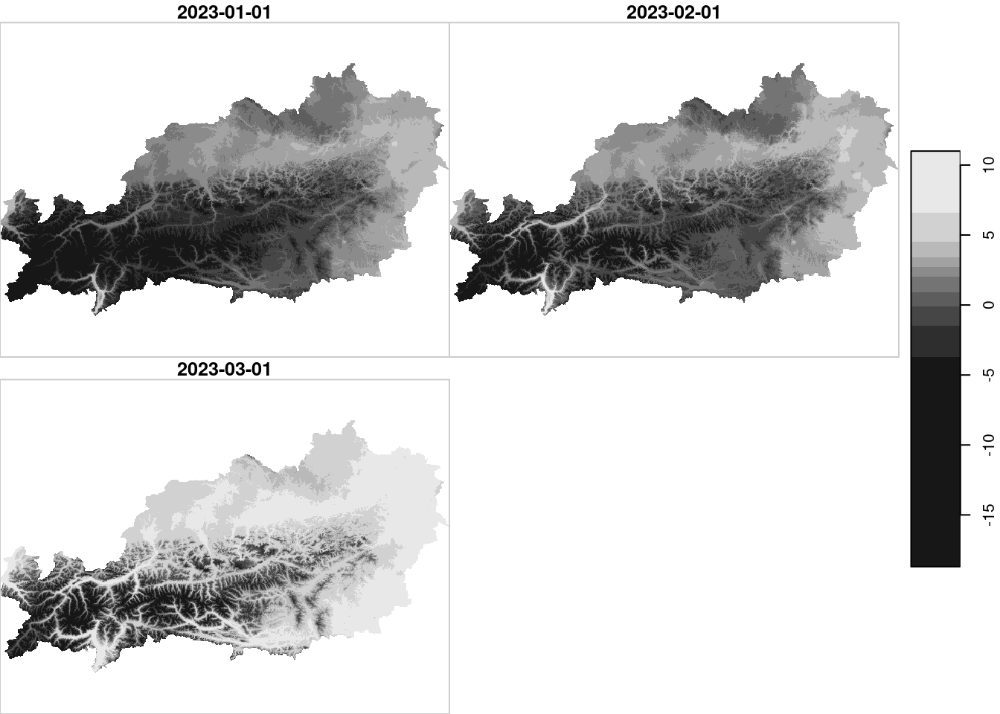
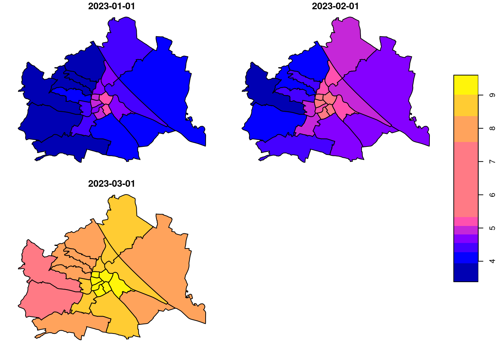
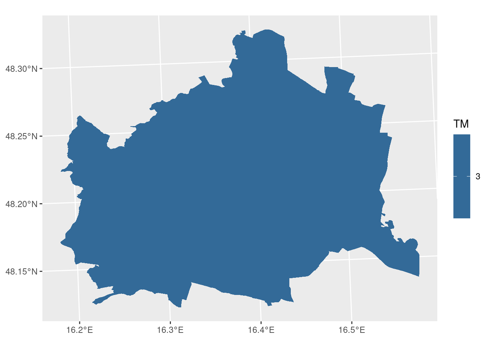

Code
library(sf)
library(stars)
library(tidyverse)
library(here)library(sf)
library(stars)
library(tidyverse)
library(here)dimension attributedimensions of class dimensions that holds the dimensions metadatastarsMonthly mean air temperature data from Geosphere
# spartacus temp data
au_temp_jan_mar = read_ncdf(here("data/geodata/SPARTACUS - Spatial Dataset for Climate in Austria Datensatz_202301_202303.nc")) %>% st_set_crs("EPSG:3416")
# vienna for aggregation
vienna = read_sf(here("data/geodata/gems_oe_31287.fgb")) %>% dplyr::filter(str_detect(g_id, "^9.*")) %>% st_transform(3416)
plot(au_temp_jan_mar)
per_district = aggregate(au_temp_jan_mar, vienna, FUN=mean)
plot(per_district)
Unsurprisingle it was in march…
per_district_max = aggregate(au_temp_jan_mar, vienna, max)
w = st_apply(per_district_max, "geometry", function(x){
return(ifelse(all(is.na(x)), NA, which.max(x)))
})
ggplot() + geom_stars(data=w)
# start with one
jan = au_temp_jan_mar[,,,1]
# find the max cell and its centroid
which.max(jan[[1]])[1] 131330dimenstions_attr = attr(au_temp_jan_mar, "dimensions")
dimenstions_attr from to offset delta refsys
x 1 584 112000 1000 ETRS89 / Austria Lambert
y 1 329 258000 1000 ETRS89 / Austria Lambert
time 1 3 NA NA POSIXct
values x/y
x NULL [x]
y NULL [y]
time 2023-01-01 UTC, 2023-02-01 UTC, 2023-03-01 UTC